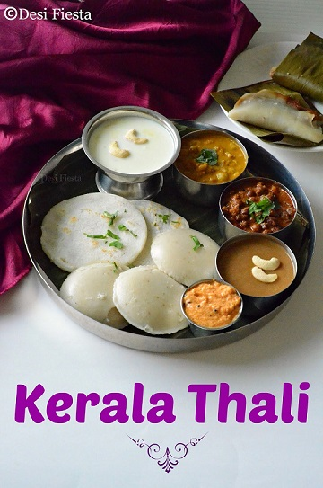
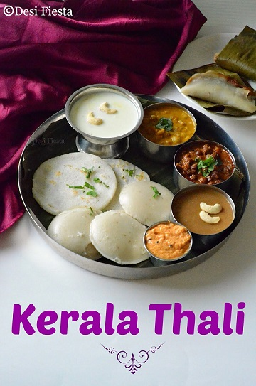
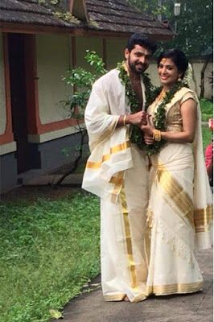
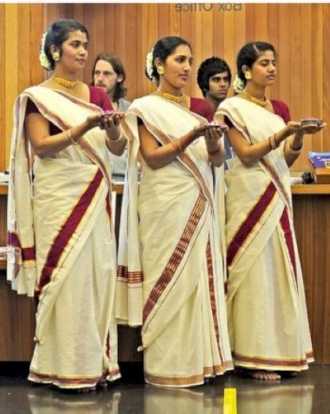
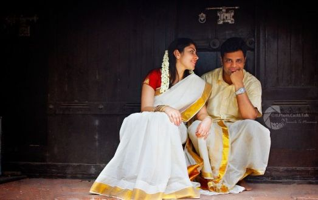
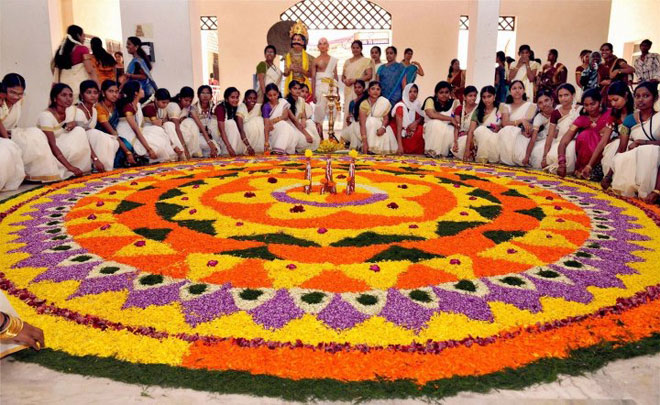
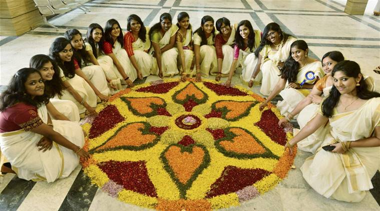

Kerala
- Home
- Food
 

- Fashion
  
- Festival
- Kerala Boat
- Onam
 
Onam
A 10-day long festival, Onam is a well renowned Hindu festival that is celebrated with huge devotions. The striking feature of this festival is that it involves Kathakali dance, indoor and outdoor games, boat races and several featuring songs. Onam has been celebrated to mark the homecoming of King Mahabali, who used to rule Kerala during the ancient perio The period of King Mahabali was said to be a golden era of Kerala, where people lived happily with love, harmony, and prosperity.

Kerala Boat
Boat Festival is enhanced with different sizes of the boats, where you can see the team spirit among participants, great enthusiasm among the riders and people cheering each other all around the place. Most Famous Boat Races in Kerala: Nehru Trophy Boat Race in Alleppey, Champakulam Moolam Boat Race at Alappuzha,Vallam Kali at Punnamada Lake and PayippadJalotsavam at PayippadLake located at a distance of 35 km from the district Alappuzha Time of Celebration: Usually the boat festival is held in between July to September. Major Attraction: Unique feature of the boat festival is that it is celebrated for many reasons. It is either associated with temples or with Onam or at times held without any reason. . - Onam
- Kerala Boat